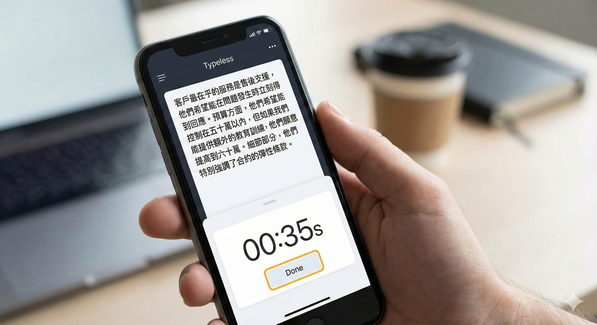
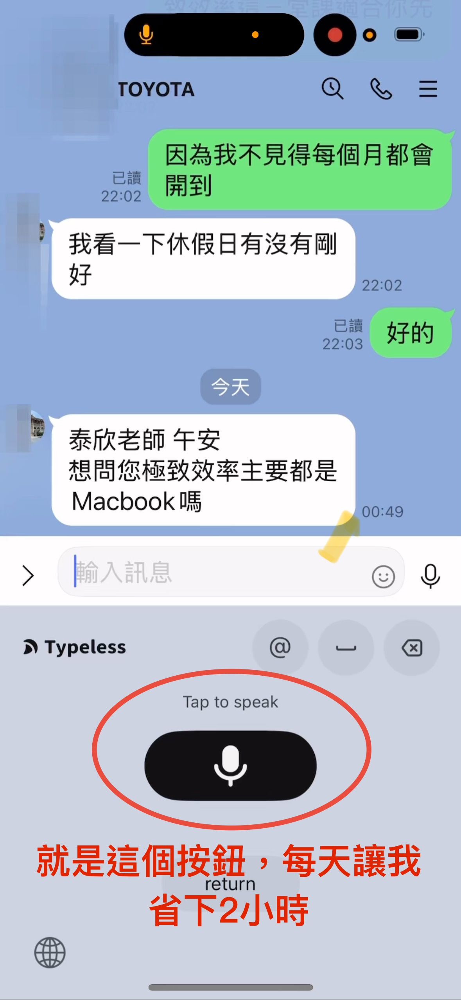
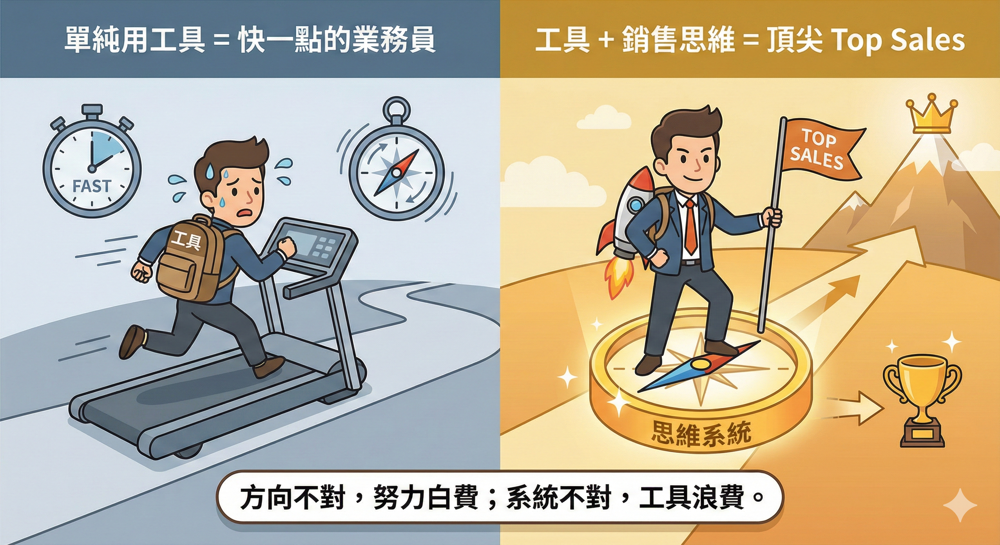

你是不是覺得每天光是打字回訊息，就花掉你一半的業務生命？ 這個軟體 Typeless 可以幫你達到 極致效率。
想像一下，當別的同事還在加班打日報表時， 你已經用 Typeless 講完今天的紀錄，準時下班去健身房， 而且客戶資料比他們更詳細。這才是 頂尖業務該有的生活。
這個軟體在工作上優點主要有三點：
1. 裝置同步與便利性 iPhone 跟 Macbook 都可以使用，而且能共用同一個帳號，不斷的學習、進步，還有迭代。
2. 保留個人真實語氣 很多時候我們寫完文章會讓 AI 幫忙修改內容，但會發現 AI 的語氣最近常被大家挑出毛病（太過機械化）。而這個打字軟體（Typeless）可以讓你完全用口述的方式，以你的角色和說話語氣來完成文章，這樣寫出來的內容會 更有人情味、更有溫度。
3. 迅速整理客戶資料 就像我在「極致效率」這門課講過的「儲存客戶四部曲」，不論你在輸入客戶的姓名、地址，或是記錄與他的接觸史，每一個步驟都能幫你省下非常多的時間。

之前遇到很多同學可能對打字不是那麼熟悉，接下來你只要學會用語音輸入，這個程式就能完全解決你的問題。
接下來就來上教學，我給大家 三個情境。這也是我自己認為最好用的地方：
情境一：即時記錄客戶重點與核心問題
每一次接觸完客戶後，一定要記錄下對方說過的每一個重點與核心問題。如果你使用 Typeless 這個軟體，可以在離開現場後，馬上口述剛才三小時談話的內容： (a) 客戶最在乎的服務 (b) 客戶購買目的與預算考量 (c) 客戶考量的細節重點
只要三分鐘，就能完整記錄客戶訊息，不用擔心錯別字或標點符號的問題，讓你 完整保留最真實的資訊。
情境二：高效回覆長訊息並節省修詞時間( IG實測影片→https://reurl.cc/ORnvXA)
有時候回覆訊息需要打一長串內容。以我的案例來說，學生常問我：「如果沒有 MacBook，只有手機可以上極致銷售的課程嗎？」
我必須解釋筆電與手機操作的差別，這類文字通常要花二、三十分鐘不斷修飾。現在只要有這個軟體，你可以 直接一次講完，語氣自然又是你原本的風格，最後再稍微校稿即可完成。

情境三：同步練習文案技巧與口說表達
在撰寫社群文案與文章時，運用這個方法可以同步練習寫作技巧與口語表達。身為銷售顧問，最重要的是打造個人 IP： (a) 當個人品牌強大時，你銷售的就不只是產品，而是你自己 (b) 強大的個人品牌讓你在任何平台都能賣得動產品，也不必擔心離職風險
每天寫文章時運用這個方法，我保證你能省下大量製作文案的時間，並在過程中練習 「知行合一」。當腦袋裡有豐富知識時，還要能說得出來讓別人理解，這是一種需要被訓練的能力。
事實上，我今天這整篇文章都是用 Typeless 打出來後，再丟給 AI 幫我校稿一次、決定文字。 內容完全保留了我的語氣。
最後我會補充必用這軟體的三大優點：
辨識速度極快：每一次你講完，它只需要不到 10 秒鐘就可以把你所有的文字正確且清楚地寫出來，而且甚至還可以 自動幫你建立你自己常說的專有名詞。錄製時間長：一次可以錄製 6 分鐘。以每秒最舒服的講話速度（約 230-270 字）計算，6 分鐘就能完成一千多字的長篇文章。自動排版標點：排版跟標點符號都會幫你直接做完，而且都是正確的，讓你完全不需要再去擔心。像以前使用 iPhone 時，我們還要特地講出「逗號」、「句號」或「括號」來協助標點符號的輸入，現在這都不需要了。
🔗 Typeless 下載使用連結： https://www.typeless.com/refer?code=H2I5PGR
『這是連科技大咖雷蒙都推薦的神器』
當競爭對手有了 Typeless，一天能跑 5 個客戶，你還在打字只能跑 2 個。
工具拉開了效率的差距，但真正拉開貧富差距的，是你腦袋裡的銷售系統。 如果你只有快，卻不懂銷售心理，那你只是更快的被客戶拒絕而已。

如果你想知道整體的銷售 SOP 架構，以及如何運用 iPhone 與筆電直接落地實戰，那麼 「極致銷售」 這門課一定最適合你。
那麼 「極致銷售」 這門課你一定要來聽。
03/12【極致效率】 🔗 報名表單：https://jizhi-xiaolv-sys-levsc14.gamma.site
懂得怎麼去運用工具，絕對不是你學習的重點，而是能夠真正地將學習落地在你每一天的工作上。
讓每個知識點隔天真能用，這才是所有的學習核心。
「懂工具是本能，能落地是本事；讓科技為你省時，讓銷售為你增值。」
🔧 你的業績卡住了嗎？因為我也走過那段「心累」的路，所以我懂你的痛。如果你想知道...你的「業務原廠設定」是適合開發還是穩定成長？你容易卡在「開發」、「開口」還是「成交」？👇 點擊連結加入 LINE私訊「想知道銷售天賦」，15分鐘幫你找到業務專屬天賦!https://line.me/ti/p/jzdho94spl
Instagram：eintaixin
個人官網